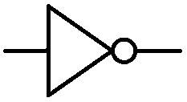

A decay hardened quine refers to a programming concept where a quine program, a program that prints its own source code, is designed to be robust against character corruption or "decay."
Open computation that goes beyond open source, made from parts designed to be recombined.
Every layer of a malleable computing system is designed to support arbitrary recombination, reused across environments and freely sharable with others. Modifying such a system happens in the context of use, rather than through some separate tool and skill set.
In constrast with monolithic applications, these amorphous computers are finely tuned and thoughtfully crafted by their operator over the course of a practice.

At its core, a malleable system is made of heterogeneous parts capable of assemblage. Within the context of computation, it is an attribute shared by different interoperable systems, not unlike programs that communicate via unix pipes, and some flow-based programming environments.
A malleable part is a transformer in a chain of transformers, and is itself also made of equally interconnected links, nodes or agents. The more malleable a system, the blurrier the distinction in the granularity of these parts.
| Malleability | |||
|---|---|---|---|
| Silo | A system in which nodes will forcefully captures the message is a silo. | ||
| Shallow | Messages can enter and leave a system that is not malleable itself, this is malleability of a superficial kind. | ||
| Average | Messages can flow freely between internal nodes of a malleable system, but capabilties are restricted by domain, interface, or operator competency. | ||
| Deep | Messages can be passed seemlessly across every level of the system, the division into layers has entirely vanished. | ||
A potential advantage to this granularity is the distribution of complexity so that an operator can more gently transition toward a deeper understanding of the finer parts that makes up the solution to a problem.

Design for reversibility: For a system to be approachable from a wide range of competency, it might be valuable to lower the cost of errors, and limit the blame put upon its operator by favoring transformations that can be undone.
Some automata conserve enough state through their transformation that computation can happen backward, without cluttering large amount of memory with screenshots.
Familiar examples of reversible computation are the multiplication of a number by a fraction and using the reciprocal to recover that number, or the stack machine operation rot. The bitwise operator not or the stack machine swap are self-reversible examples, which means that same operator can applied once again to recover the earlier state.
- Inverse Operators, Vine Language
- Thermodynamics of Garbage Collection, Henry G. Baker
- Undoing Register Machines, Fractran
Design for concatenation: A point-free message passing paradigm that does not identify the arguments on which it operates might prove valuable in a Deeply Malleable system would it value both inspectability down to its the mechanical transformation, and reasonable evaluation performance.
: SQUARED ( n -- n^2 ) DUP * ; : CUBED ( n -- n^3 ) DUP SQUARED * ;
In such a system, nodes merely compose other nodes, among which are combinators that manipulate the arguments, regarless of context. This is a fancy way of saying that a concatenative subexpression can be replaced with a name that represents that same subexpression.
: POPCNT ( n -- bits ) 0 swap BEGIN dup WHILE tuck 1 AND + swap 1 rshift REPEAT DROP ;
A maximally accessible system such that the finer details in movement of bits are observable but that does not run on generic hardware would be paradoxal by virtue of its inaccessibility. For that reason, depending on the host computer, a function definition like the one above(which might exist as a single opcode), should probably still be part of the observable system definitions even if it is not evaluated.
Design for diversity: For the technical infrastructures of malleable software to support networks of people collaborating together, across many levels of competancy, to make software work for themselves and their communities. Such a system will surely be connecting wildly different interfaces and notations.
The rewriting language Maude, uses a mixfix notation making the system
neither prefix, infix, or postfix, but adaptable to the user's needs and
background. To demonstrate something akin to the mixfix notation and give a
taste of rewriting, consider a system made of rules where a given left-hand
side is replaced by its corresponding right-hand side, and where
?words will match anything.
(add ?x ?y) -> (?x + ?y) (?x ?y add) -> (?x + ?y) ((?a) + ?b) -> (?a + (?b)) (0 + ?b) -> (sum ?b)
(add 1 2)
The first two rules of program above both enable the translation between prefix & postfix, to the infix notation, as well as translating a symbol that might otherwise be localized.
| Even Check | |
|---|---|
| Message | Bit |
| 1101 001 | 1 |
Design for decay: A message, as far as computers are concerned, is an anonymous stream of bits in transit. Error correction is done by transmitting additional information to catch information loss or tampering. For example, by adding a parity bit that corresponds to the odd or even number of active bits in a specific length of data.

The Arecibo Message is an interstellar radio message for which reciever's capabilities are unknown, the length of the message was chosen to be a semiprime so its dimension(73 rows by 23 columns) could be infered from an otherwise totally headerless message.
(Currently working on this, come back tomorrow...)
finite state machines discrete time- Malleable Essay, Ink & Switch
- Malleable Systems, forum